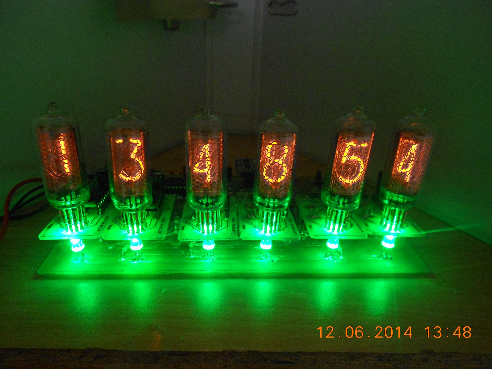

DIYElectronic est un site rédiger par des passioné d'élecronique et d'infomatique.
On parlera sur se site de microcontroleur (ATMEGA328P, ATMEGA8, ...), d'arduino, de raspbery, etc
Tous se qui touche de près ou de loins l'électronique et/ou l'informatique poura être vus.
Si contre vous verrez un de nos projet, l'horloge a tube nixie !